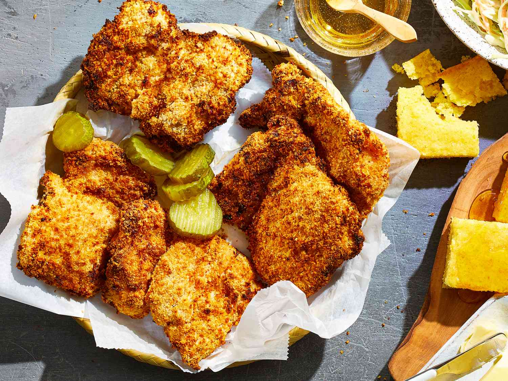

Air Fryer Buttermilk Fried Chicken
Home

Plate of extra-crispy air fryer buttermilk fried chicken
Air Fryer Buttermilk Fried Chicken is a modern twist on a Southern classic, delivering crispy, golden perfection with a fraction of the oil. It begins with tender chicken pieces soaked in a tangy buttermilk marinade, infused with hints of garlic, paprika, and a touch of cayenne for a subtle kick. The chicken is then coated in a seasoned flour mixture—crisp cornflakes or breadcrumbs optional—creating a craggy, crunchy exterior that locks in juicy, succulent meat. Cooked in an air fryer, the hot air circulates to achieve that signature fried texture without the guilt, resulting in a lighter yet equally satisfying crunch. The exterior boasts a deep, savory flavor with a whisper of spice, while the interior remains irresistibly moist and flavorful. Served hot, it’s a comforting, crowd-pleasing dish that marries tradition with innovation.
Ingredients
- 1 ½ pounds boneless, skinless chicken thighs
- 2 cups buttermilk
- 1 cup all-purpose flour
- 1 tablespoon seasoned salt
- ½ tablespoon ground black pepper
- 1 cup panko bread crumbs
- cooking spray
Steps
- Place chicken thighs in a shallow casserole dish. Pour buttermilk over chicken and refrigerate for 4 hours, or overnight.
- Preheat an air fryer to 380 degrees F (190 degrees C).
- Mix flour, seasoned salt, and pepper in a large gallon-sized resealable plastic bag. Dredge chicken thighs in seasoned flour. Dip back into buttermilk, then coat with panko bread crumbs.
- Spray the air fryer basket with nonstick cooking spray. Arrange 1/2 of the chicken thighs in the basket, making sure none are touching. Spray top of each chicken thigh with cooking spray.
- Cook in the preheated air fryer for 15 minutes. Flip the thighs and spray tops of chicken again. Cook until chicken is no longer pink in the center and the juices run clear, about 10 more minutes. An instant-read thermometer inserted into the center should read at least 165 degrees F (74 degrees C). Repeat with remaining chicken.